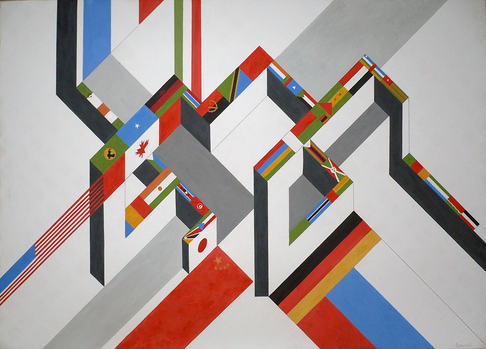
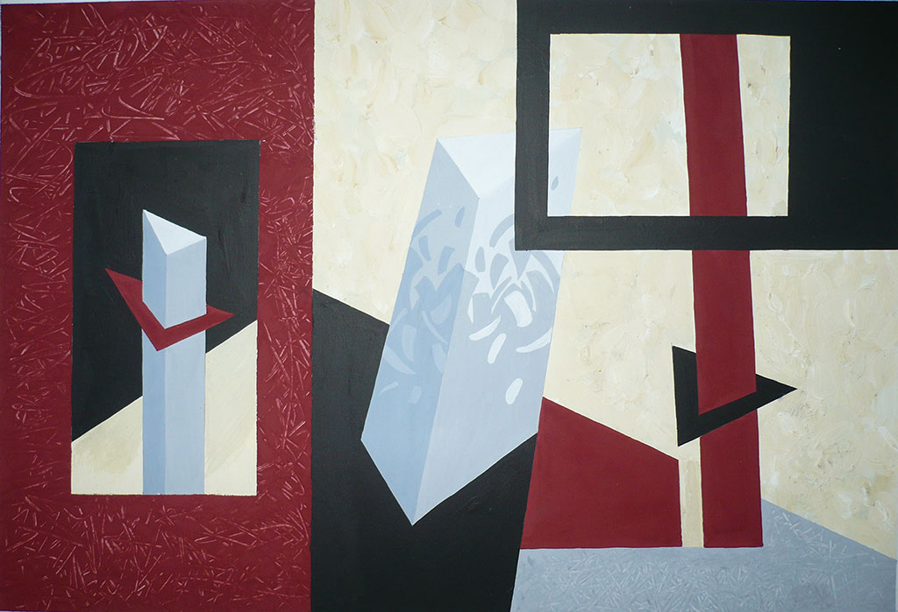
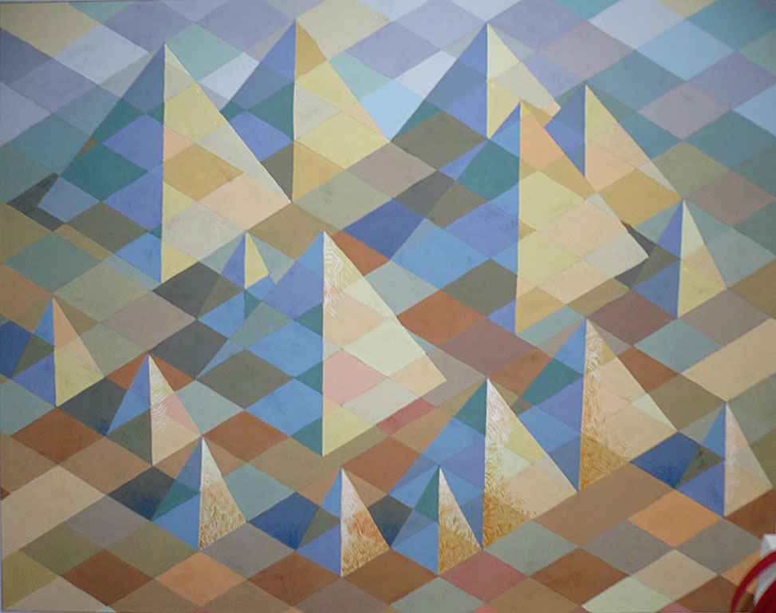
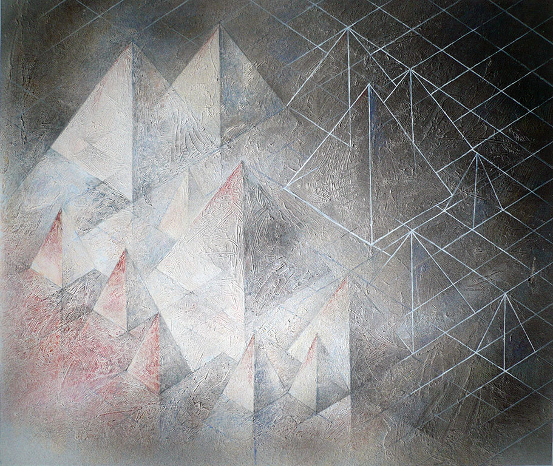

- Там,где жизнь замуровывает нас в глухую стену,
- разум прорубает окно... Разум не знает безысходности.
- Марсель Пруст
- разум прорубает окно... Разум не знает безысходности.
- ...принимать в искусстве что-нибудь на веру
- недостойно художника... Будем же доказывать свою
- правоту так, чтобы в ответ нам содрогалась вся цепь
- причин и следствий от альфы до омеги...
- Осип Мандельштам
- недостойно художника... Будем же доказывать свою
Изобразительное искусство нашего времени представляет собой хаотическую смесь всевозможных стилей, направлений и просто индмвидуальных манер. Общество предоставляет художнику полную свободу выбора пути, задач и методов. На этом фоне возникает проблема художественного образования: чему и как обучать студентов художественного вуза?
В частности, как внушить ему верные понятия о цвете, помочь в овладении этим важнейшим средством изобразительного искусства всех жанров и специализаций? Я думаю, что ответ на этот вопрос следует искать в науке — философии, эстетике, искусствознании.
В хаосе, царящем в художественной культуре нашего времени, скрыта невидимая на первый взгляд структура; обнаружив её методом научного анализа, можно построить логическую систему взаимосвязанных категорий. Эта система служит своего рода измерительным инструментом, при помощи которого можно обнаружить скрытый смысл произведения, тип мышления художника, его стилевые особенности, его концепции. А также — что для нас в конечном счете важнее всего — характеристики цвета и колорита.
Наша система категорий может быть сравнима с планетарной (например, солнечной) системой. Вокруг центрального ядра, состоящего из двух понятий — жизнь-искусство — вращаются три группы двойных (полярных) категорий.
Первая группа связана с фундаментальной парой философских понятий внешнее-внутреннее. Эта бинарная система разворачивается в ряд оппозиций:
|
|
Категории левого столбца характеризуют мышление классического типа; в правом перечислены особенности романтического мышления.
(Не следует отождествлять наши термины со стилями классицизма и романтизма. Стиль — понятие более узкое, конкретное, связанное со временем и культурой того или иного региона. Названные выше и далее категории имеют свойства вневременных и культурно-универсальных).
Искусство, в котором доминируют характеристики группы А (левый столбец), отличается натуральностью форм и красок. Художники пользуются в своих произведениях природной палитрой: это краски земли, воды, неба, травы, меда и молока, закатов и рассветов, птиц и животных, цветов и плодов.
Живописцы античности, возрождения, классицизма, реалисты Х1Х в. писали натуральными красками растительного, животного или минерального происхождения. Колорит их картин был так же близок природному колориту местного пейзажа, как формы земного мира изображенным на картинах. Для художников реалистического направления антинатуральность красок — ошибка или тяжкий грех, а гармония — основной закон. Тип мышления этих живописцев — классический.
Художники противоположного типа — романтики — используют цвет и колорит как средство для выражения своих интуиций, фантазий, настроений, сновидений, ассоциаций. Палитра их состоит из красок, несравнимых со спектральными и более сложных, чем натуральные.
Например, вместо красных появляются цвет винной ягоды, давленой вишни, кислой малины, вянущей розы, или розы, залитой кровью (как у Делакруа); резвая пастушка, веселая вдова, майское утро, кардинал на соломе (как в стиле рококо); Микадо, Фанданго, Казино, цвет старого бургундского (как в стиле сецессии). В таком же духе усложняются и наполняются образным содержанием синий, зеленый и другие спектральные цвета.
Палитра экспрессионистов (М, Шагал, Л. Кирхнер, М. Бекман)
Богата сверх-насыщенными красками, а колорит сверх-напряженными контрастами; цвет фигур и предметов также не согласуется с природным. Например, лицо может быть зеленым, а конь — ярко-красным. Экспрессионисты не изображают, а выражают. Все их краски и сочетания выполняют одну функцию: выразить чувства и мысли художника, отобразить его видение мира в целом.
Вторая группа парных категорий характеризует отношение художника к фундаментальным ценностям объективного (физического) мира.
|
|
Категории левого столбца предпочитают художники с классическим типом мышления. К ним относятся мастера античности, возрождения, классицизма, реализма ХIХ и ХХ веков. Достаточно вспомнить Джотто, Беллини, Рафаэля, Леонардо да Винчи, Тициана, Энгра, Давида, Курбе, Репина, Крамского, Брюллова...
Мастера барокко, напротив, отличаются романтическим типом мышления. Они растворяют массу в пространстве (Рубенс), погружают ее в тень, оставляя лишь блики (Рембрандт, Жорж де ля Тур), вводят движение, ракурсы, повороты в рисунок формы (Веронезе, Тинторетто).
Нередко отказываются от хроматической палитры ради эффектов чистого цвета и тени (Франс Гальс, Рембрандт, Доменико Фетти).
Предпочтение категорий левого столбца обычно вызывает уменьшение (или отсутствие) ценностей правого, и наоборот. Так, в живописи неолита, Древнего Египта, Вавилона объемные тела изображаются спроецированными на плоскость; проблема света вообще отсутствует, зато господствует цвет. В живописи постимпрессионизма также объем редуцируется в плоскость, светотень отсутствует, но чистые насыщенные краски создают эффект свечения (Матисс, Гоген, Ван Гог, Аветисян). Из антитезы свет-цвет постимпрессионизм выбирает цвет, но трактует его так, что получается эффект сияния, излучаемого картиной.В живописи и архитектуре средневековья существует ряд приемов, позволяющих добиться такого же эффекта.
В искусстве модернизма мы видим порой исключительное доминирование одной-двух категорий, не оставляющее места для других. Так, в оп-арт доминирует свет (передаваемый посредством цвета), а в поп-арт — форма, притом нередко выходящая из плоскости картины.
Принципиально важно для понимания концепции искусства отношение его к эстетическим и морально-этическим ценностям, то есть к «человеческому фактору». Категории этого типа также образуют систему бинарных оппозиций:
|
|
Эту группу категорий, пожалуй, можно считать самой актуальной в наше время, когда силы абсурда, хаоса и разрушения активизировались не только в геополитике, но и в искусстве. Художник-авангардист (трикстер) — по определению разрушитель, носитель антигармонического и антигуманистического начала.
Колорит его творчества составляют искусственные химические краски, отсутствующие в природе. Они шокируют и вызывают отвращение. Недаром народ дал им остро-выразительные названия: вырви-глаз, цвет бешеной собаки, детской неожиданности, цвет желчи, цвет моего отчаяния и др.
Яркость и необычность таких красок может привлекать человека, но вскоре утомляет, т.к. нашему зрению предписана норма воздействия раздражителя: до известного предела возбуждение от яркости цвета приятно, но вскоре наступает адаптация и утомление, сопровождаемые отрицательной реакцией на цвет.
Явление адаптации свойственно не только индивидууму, но и целым культурам. Так, итальянские художники начала ХХ века перестали ценить сокровища тысячелетней культуры своей страны. Футуристы заявляют: «Наша возрастающая потребность истинности не может более удовлетворяться Формой и Краской, понимаемыми так, как до сих пор». Краски футуристических картин должны, как провозглашает манифест, достигнуть максимальной яркости. Освободившись от «плена атавизма и культуры», футурист и его зрители заметят,что «коричневые краски никогда не обращаются под нашей верхней кожей, ...что желтая блещет в нашем теле, что красная там пылает, что зеленая, синяя и фиолетовая там пляшут с тысячью сладострастных и приветливых грациозностей... Наши картины возле музейных заблещут, как ослепительный полдень рядом с сумрачной ночью» (Томмазо Маринетти, 1914г.) Футуристам вторит Казимир Великий: «Ниспровержение старого мира искусств да будет вычерчено на ваших ладонях».
Спор старых и новых, классиков и романтиков, героев и антигероев продолжается.
Изложенная здесь вкратце система категорий художественного мышления служит основой методики преподавания курса колористики. Некоторое понятие о её практическом приложении могут дать приведенные здесь иллюстрации и комментарии к ним.
Иллюстрации
Два стиля
Классический

Автор работы: Дюков Д.
Романтический
Автор работы: Гиль Ю.
Два типа красок
Натуральные

Автор работы: Ващенко Я.
Искусственные

Автор работы: Клуйша И.
Два типа видения
Плоскостный

Автор работы: Сенько А.
Пространственный

Автор работы: Мерляк А.
Миронова Ленина Николаевна
24.05.2008